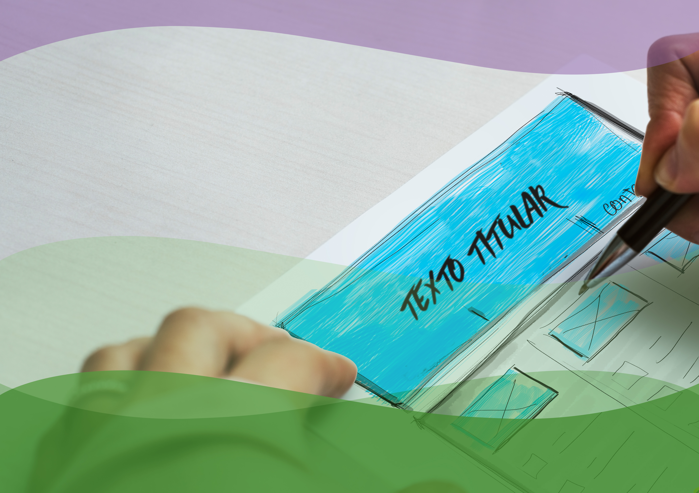
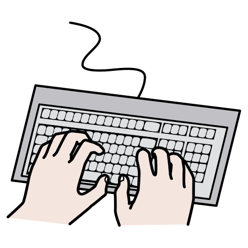
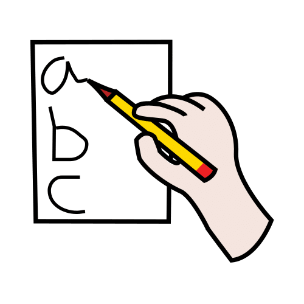
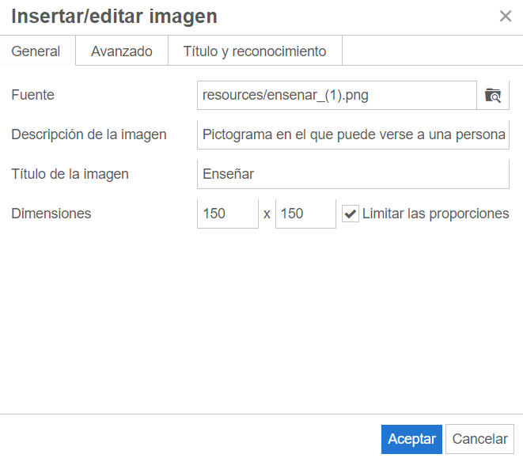
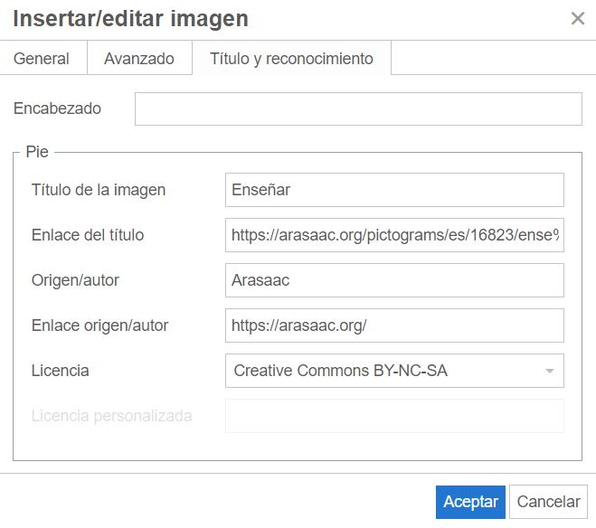

Crea tu REA para el Proyecto REA Andalucía
3.5. Guía de estilo
Pautas de estilo
Sigue las recomendaciones sobre el estilo lingüístico que te proponemos a continuación cuando vayas a crear tu REA:
La redacción

Lenguaje
- Usa un lenguaje inclusivo:
- Pon ejemplos de mujeres y hombres.
- Usa imágenes y pictogramas en los que salgan hombres y mujeres.
- Utiliza el colectivo: alumnado, profesorado.
- No utilices signos como @, x u otros, ni abuses de los desdoblamientos (los alumnos y las alumnas). Dificultan la lectura.
- Cuida no relacionar actividades con el sexo. Por ejemplo: las mujeres lavan la ropa y los hombres gobiernan.
- Cuida el orden. No menciones siempre primero a los hombres.
- Usa la palabra “personas”. Por ejemplo: las personas con discapacidad.
- Usa palabras sin género. Por ejemplo: quienes vayan a la excursión.
- Habla de profesiones en femenino. Por ejemplo: la arquitecta diseñó el edificio.
- Utiliza un lenguaje correcto y directo, evitando circunloquios innecesarios.
Por ejemplo: “Alquiló un edificio, compró máquinas y contrató empleados = Montó una fábrica.”
- Procura dirigirte directamente al alumnado usando la segunda persona del singular, como si estuvieras hablando en clase.
- Cuida la extensión de las oraciones. Es recomendable usar oraciones simples (con un solo verbo) en lugar de compuestas (dos o más verbos).
Por ejemplo:
“Lee con atención el siguiente texto, subraya en otro color las ideas principales y haz un breve resumen con tus palabras.”
“Lee el siguiente texto. Subraya las ideas principales. Y resúmelo con tus palabras.”
Tipografía
- Usa la tipografía por defecto del estilo EducaAnd para eXeLearning, siguiendo las recomendaciones de Lectura Fácil:
- El tamaño de la fuente es 1.05em, 16.8px.
- La fuente elegida es "AtkinsonHyperlegible", creada por el Instituto Braille que posee una mayor legibilidad para lectores de baja visión.
- El interlineado es 1.4em, 22.4px.
- El contraste fondo-fuente ha validado el nivel AA de la WCAG.
- La alineación por defecto es la izquierda.
- Aplica también el estilo para tablas y encabezados.
- Usa la negrita para destacar alguna idea o palabra importante; excepto en texto en Lectura Facilitada, que usarás la negrita exclusivamente para las palabras que se definan en el glosario y para las glosas.
- Usa la cursiva para las citas textuales y los títulos de obras.
Por ejemplo:
Como dijo Einstein: Cada día sabemos más y entendemos menos.
Lee este fragmento de Orgullo y Prejuicio, de Jane Austen. A continuación describe a los personajes.
- Emplea la cursiva también para los neologismos, las palabras que se usan en sentido figurado y los préstamos.
Realiza un timeline con los principales hitos históricos del siglo XX.
Puntuación: punto y seguido y punto y aparte
- Usa el punto y seguido cuando finaliza una oración y comienza otra relacionada con la anterior.
Por ejemplo: Estamos investigando los signos de puntuación. Lo haremos en equipos.
- Utiliza el punto y aparte al terminar una oración que está poco relacionada con la siguiente.
Por ejemplo:
Estamos investigando los signos de puntuación.
En la siguiente unidad conoceremos las reglas de acentuación.
Puntuación: la coma
- Usa la coma para:
1. Separar elementos en una enumeración.
Por ejemplo:
En el jardín hay rosas, petunias y lírios.
2. Para separar el nombre de una persona a la que nos dirigimos.
Por ejemplo:
Marco, entrega ya tu examen.
3. Para realizar aclaraciones dentro de una oración.
Por ejemplo:
Los félidos, salvo el guepardo, tienen garras retráctiles.
4. Para separar expresiones como “es decir”, “en fin”, “por último”...
Por ejemplo:
Juan es médico, es decir, estudió medicina.
Puntuación: punto y coma
- Utiliza el punto y coma para:
1. Unir dos oraciones o dos ideas muy relacionadas.
Por ejemplo:
Compré melocotones; también compré uvas.
2. Para separar elementos de una enumeración formada por sintagmas.
Por ejemplo:
Ayer fui al instituto; después a casa de mi abuela; pregunté a Clara la tarea; y jugué con mis amigos y amigas.
Puntuación: los dos puntos
- Emplea los dos puntos para:
1. Las explicaciones.
Por ejemplo:
En el zoo había: tigres, elefantes y aves.
2. Introducir las citas textuales.
Por ejemplo:
Ya lo dijo Platón: Donde reina el amor sobran las leyes.
3. Para el encabezamiento de correo y documentos.
Por ejemplo:
Querida amiga:
Te escribo para contarte...
El formato

Títulos
- Usa títulos cortos, atractivos y que definan el propósito del apartado.
- Recuerda que al final de los títulos no tienes que añadir punto.
Apartados
- Diseña el árbol de contenidos con un máximo de tres niveles de anidación.
- Distingue los apartados y subapartados del menú incluyendo numeración previa al título. Por ejemplo:
1. Comenzamos nuestra aventura
1.1. Exploramos nuestro cole
1.2. Ponemos en común nuestros resultados
1.3. ...
- Numera también ejercicios y actividades incluyendo dicha numeración en el título del ejercicio/actividad.
- Incluye no más de 15 apartados por REA.
- En cuanto a la extensión de los apartados, diseña en torno a tres pantallas de navegación para cada uno.
- No olvides insertar al menos una imagen, ilustración, elemento gráfico o elemento multimedia en cada apartado.
Listas
- Usa las listas para estructurar el contenido, siempre que sean de más de un elemento.
- Puedes usar listas ordenadas (cuando la información lleva un orden) o viñetas.
- Añade un signo de puntuación al final.
Listas con diferentes niveles
- Para jerarquías con diferentes niveles y subniveles de información puedes combinar números y símbolos.
- El esquema numerado permite mostrar los niveles y subniveles.
- Para jerarquizar la información se pueden utilizar solo números. Por ejemplo:
1.
1.1
1.2
2.
2.1
2.2
- También se pueden combinar números y letras. Por ejemplo:
1.
1.a
1.b
2.
2.a
2.b
Hipervínculos
- Añade un título a los hipervínculos y enlaces, de manera que se informe del lugar al que dirige.
Por ejemplo:
"Accede al recurso + Nombre del recurso"
"Accede a la web + Nombre de la web"
Documentos de creación propia
- Si creas un documento adjunto de creación propia en tu REA, recuerda usar:
- las plantillas del Proyecto
- la fuente Atkinson Hyperlegible (que habrás de instalar en tu equipo)
Los recursos multimedia
Imágenes
- Siempre que insertes una imagen, completa los apartados de la pestaña "General".
En el Título: añade la información que se verá al pasar el ratón por encima de ella.
En Descripción de la imagen: añade el texto que leerán los lectores de pantalla.

Vídeos y otros elementos multimedia
- En el caso de que insertes o embebas una infografía, un recurso, un vídeo o un audio, recuerda ofrecer una trascripción alternativa del mismo.
- En el caso de los vídeos, activa los subtítulos.
Licencias
- Los Recursos Educativos Abiertos del Proyecto REA Andalucía se publican bajo Licencia Creative Commons CC BY-NC-SA, por lo que los elementos que se integren en ellos han de ser compatibles con dicha licencia.
- Es importante que siempre que uses contenido de terceros cites quién es la autora o autor del recurso, añadas un enlace al recurso original (siempre que sea posible) e indiques el tipo de licencia original.
- Recuerda que puedes usar una obra ya divulgada con Copyright si es para citarla, analizarla, comentarla o criticarla. Y si posee Licencia Creative Commons, puedes usarla respetando las condiciones del tipo de licencia.
Cómo citar obras de autorías con licencia CC
- Si el trabajo contiene alguna información sobre el copyright incluida por el/la autor/a dejarla intacta o reproducirla de una forma razonable considerando el medio en el que se está reproduciendo.
- Citar el nombre del autor/a, nombre en pantalla, identificación de usuario, etc. Es aconsejable enlazar el nombre de la persona a la página de su perfil.
- Citar el título del trabajo (si existe). Es conveniente enlazarlo al trabajo original.
- Citar la licencia CreativeCommons bajo la que está el trabajo. Se debe enlazar la página de dicha licencia dentro de la web de CreativeCommons.
- Si se trata de un trabajo derivado o una adaptación, además de lo anterior, explicitar que la obra es un trabajo derivado. Por ejemplo: "Esto es una traducción de (trabajo original) por (autor/a)".
- En algunos casos el/la autor/a establece requerimientos adicionales en cuanto a la atribución de la obra a cierto nombre, pseudónimo u organización o referente a su asociación a una URL particular.
- La forma en que se puede presentar esta información es flexible, no hay un modelo rígido preestablecido.
Créditos
- Siguiendo las pautas de Lectura Fácil, añade al final de tu REA un apartado para créditos en el que indiques el nombre y la autoría de todas las imágenes o recursos multimedia utilizados. Para ello, completa la pestaña "Título y reconocimiento".

|
Imágenes |
|
Recomendaciones sobre el subtitulado
¿Qué es?
Según la Norma UNE 153010 se define subtítulo como “Conjunto de texto y gráficos que muestran en pantalla los discursos orales, la información contextual y los efectos sonoros que se producen en cualquier obra audiovisual”.
¿Cuándo usarlo?
- Cuando el recurso no disponga previamente de la opción de subtitulado.
- Cuando aun existiendo ya subtítulos del recurso, los términos utilizados en el mismo no se han traducido correctamente.
- Cuando las construcciones gramaticales utilizadas, en el subtítulo ya existente, son inexactas.
- Cuando se necesite facilitar la lectura fácil del recurso simultáneamente a su visualización.
¿Cómo aplicarlo?
Para realizar el subtitulado será necesario elaborar un guion previo donde quede reflejado el contenido que aparecerá en el recurso. Se recomienda extraer el texto del subtítulo para añadirlo como documento escrito del REA ya que, de esta forma, se cuenta con un apoyo gráfico más.
¿Con qué herramienta crearlo?
Aegisub es un editor de subtítulos de formato SubStation Alpha (.ssa, .ass)
Accede al documento para verificar la calidad de los subtítulos.
Recomendaciones sobre las audiodescripciones
¿Qué es?
Según la Norma UNE 153020 se define la audiodescripción como “Servicio de apoyo a la comunicación que consiste en el conjunto de técnicas y habilidades aplicadas con objeto de compensar la carencia de captación de la parte visual contenida en cualquier tipo de mensaje, suministrando una adecuada información sonora que la traduce e explica, de manera que el posible receptor discapacitado visual perciba dicho mensaje como un tono armónico y de forma más parecida a como lo percibe una persona que ve”.
¿Cuándo usarla?
- Esta estrategia de accesibilidad se puede aplicar a películas, series, documentales y teatros, ya sea en directo, emitidas por televisión o grabadas en cualquier soporte digital. Asimismo, también puede ser empleada en el caso de presentaciones de monumentos, exposiciones, museos, espacios naturales y temáticos. No obstante, en el caso que nos ocupa para la elaboración de un REA, debemos plantearnos cuál será la funcionalidad y beneficio del uso de la audiodescripción para el recurso que se va a elaborar.
- La audiodescripción sería necesaria si el contexto en el que se presenta el mensaje es fundamental para su comprensión.
- ¿Cómo podríamos estar seguros de ello? Bastaría con escuchar el contenido sin visualizar el recurso y así comprobaremos si se entiende fácilmente el mensaje sin necesidad de audiodescripción.
¿Cómo realizarla?
- Para realizar la audiodescripción será necesario elaborar un guion previo donde quede reflejado el contenido que aparecerá en el recurso.
- Se recomienda extraer el texto de la audiodescripción para añadirlo como documento escrito del REA ya que, de esta forma, se cuenta con un apoyo gráfico más.
Accede al documento para verificar la calidad de las audiodescripciones.
Uso de la primera lengua en los REA de la segunda lengua
En los recursos educativos elaborados para el área/materia de segunda lengua extranjera, el uso de la primera lengua se reducirá a:
- Las traducciones de la definición, ejemplo y palabra en español en los bocadillos y diccionarios según el apartado 4 de esta guía.
- La traducción de las frases en Lectura Facilitada, según el apartado 4 de esta guía.
- Los personajes llevarán su título y texto en la segunda lengua. Si se requiere traducción y siempre en el caso de Lume, se incorporará un acordeón con una única línea que dice Lumen dice... y se aporta la traducción en español.
- Cualquier otro texto que se considere que requiere traducción se insertará un acordeón de una sola línea que se titule ¿Necesitas más ayuda? y se aporta la traducción en español.
Pautas planificación guion video para facilitar subtitulados
El siguiente documento recoge algunas pautas sobre cómo planificar el guion de un vídeo de elaboración propia para después facilitar los subtitulados.
¿Qué tener en cuenta para subtitular los vídeos de elaboración propia?
Obra publicada con Licencia Creative Commons Reconocimiento No comercial Compartir igual 4.0